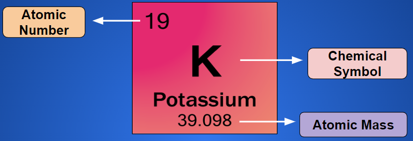
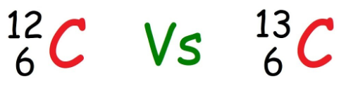

Atoms and Isotopes
Callout
Bohr - Rutherford Model
Bohr discovered that the electrons could only occupy certain energy levels. While, Rutherford, based on his experiment, proposed that the atom consists of a dense, positively charged nucleus surrounded by tiny negatively charged electrons and a relatively vast region of empty space.
These discoveries were combined creating the Bohr - Rutherford Model of Atom
|
Neils Bohr |
Ernest Rutherford |


Callout
This model has the following key features:
- The dense nucleus contains the atom’s protons and neutrons.
- The relatively tiny electrons orbit the nucleus.
- The electrons only occupy certain energy levels.
- Most of the atom consists of empty space.
The model provides a visual method for describing the atomic structure of an element. The atomic structure refers to the number of protons, neutrons, and electrons in an atom and their organization within the atom.
Terms
Proton: a positively charged particle in the nucleus of an atom
Neutron: an uncharged particle in the nucleus of an atom
Electron: a negatively charged particle found in the space surrounding the nucleus of an atom
Nucleons: particles in the nucleus of an atom; protons and neutrons
Ground State: state in which all electrons are at their lowest possible energy levels
Excited State: state in which one or more electrons are at higher energy levels than in the ground state
Atomic Number, Mass Number, and the Periodic Table

Callout
The atomic number is the number of protons in an atom of an element. Each element has a different number of protons. The mass number is equal to the number of nucleons in an atom.
The periodic table entry above indicates that potassium (K) has thirty-nine protons and nineteen electrons. The number of neutrons is determined by subtracting the atomic number from the mass number:
Isotopes
Callout
What have you observed from the picture? Do they have the same atomic number? Atomic mass?
Isotopes: a form of an element that has the same atomic number, but a different mass number than all other forms of that element
Carbon-12 consists of six protons and six neutrons. Most naturally occurring carbon has this atomic structure. There is, however, another form of carbon called carbon-14. Carbon-14 has six protons and eight neutrons.
Carbon-14 is a different isotope than carbon-12. Different isotopes of an element have the same number of protons, but different numbers of neutrons.
Constructing a Bohr–Rutherford Diagram
Example
Draw the Bohr–Rutherford diagram for silicon-28.
Step 1. Locate silicon on the periodic table. The chemical symbol for silicon is Si.
Step 2. The mass of this isotope is given: 28. Use a periodic table to identify the atomic number. The atomic number is 14.
Step 3. Since the atomic number is 14, there are 14 protons and 14 electrons. The number of neutrons is found by subtracting the atomic number from the mass number: 28 - 14 =14